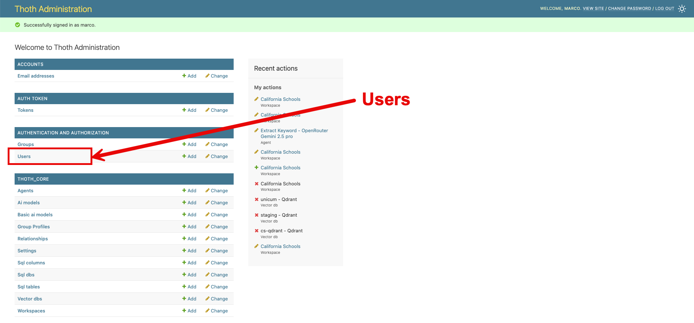

Installazione di ThothAI in locale
L'installazione in locale comprende l'installazione del backend Django, del SQL Generator (FastAPI) e del frontend Next.js.
Sviluppo Locale
Lo sviluppo locale utilizza .env.local nella directory root e lo script start-all.sh per avviare tutti i servizi
Il setup Django
Come si imposta un'applicazione Django è al di fuori dello scope di questa documentazione Andare alla pagina ufficiale di Django su questo argomento per ulteriori dettagli. In questo progetto si assume che un utente interessato a gestire il backend in modalità Developer conosca Django abbastanza da esssere in grado di modificare Thoth senza difficoltà
1 - Sistema di Configurazione per Sviluppo Locale
1.1 - File di Configurazione
.env.local
- Ruolo: Configurazione unificata per tutti i servizi locali
- Creazione: Copiare da
.env.templatee personalizzare - Contenuto: API keys, porte locali, URL servizi, credenziali
- Utilizzo: Caricato automaticamente da
start-all.sh
1.2 - Flusso di Configurazione Locale
.env.local → start-all.sh → export variabili → Servizi ereditano
↓ ↓
(filtro PORT=) Django, SQL Gen, Frontend
Processo:
1. start-all.sh carica .env.local (escluso PORT generico)
2. Esporta variabili nell'ambiente shell
3. Ogni servizio eredita le variabili:
- Django (porta 8200)
- SQL Generator (porta 8180)
- Frontend (porta 3200)
- Qdrant (porta 6334)
2 - Preparazione Ambiente
2.1 - Impostazione del file .env.local
-
Copiare il template:
-
Modificare
.env.localcon le proprie configurazioni: - API keys degli LLM (almeno uno richiesto)
- Embedding service configuration
- Porte locali (se quelle di default sono occupate)
- Credenziali admin
2.2 - Gestione Python con uv
Il progetto usa uv per gestire Python in modo consistente:
# Installare uv se non presente
curl -LsSf https://astral.sh/uv/install.sh | sh
# Installare Python gestito da uv (3.13.5)
uv python install 3.13.5
# Creare .python-version files
echo "3.13.5" > backend/.python-version
echo "3.13.5" > frontend/sql_generator/.python-version
2.3 - Installazione Dipendenze
Backend Django
SQL Generator
Frontend Next.js
3 - Avvio Servizi con start-all.sh
3.1 - Utilizzo Base
# Dare permessi di esecuzione (solo prima volta)
chmod +x start-all.sh
# Avviare tutti i servizi
./start-all.sh
3.2 - Servizi Avviati
Lo script avvia automaticamente: - Django Backend: http://localhost:8200 - SQL Generator: http://localhost:8180 - Frontend: http://localhost:3200 - Qdrant (Docker): http://localhost:6334
3.3 - Gestione Servizi
- Stop tutti:
Ctrl+Cnello script - Logs Django: Visibili nel terminale
- Logs SQL Gen: Visibili nel terminale
- Frontend Dev: Hot reload automatico
4 - Configurazione Database e Migrazioni
4.1 - Migrazioni Django
Le migrazioni vengono eseguite automaticamente da start-all.sh, ma possono essere eseguite manualmente:
cd backend
export $(grep -v '^#' ../.env.local | grep -v '^PORT=' | xargs)
uv run python manage.py migrate
4.2 - Creazione Superuser
Per accedere al pannello di amministrazione Django:
cd backend
export $(grep -v '^#' ../.env.local | grep -v '^PORT=' | xargs)
uv run python manage.py createsuperuser
5 - Risoluzione Problemi
5.1 - Conflitti di Porta
Se le porte di default sono occupate, modificare in .env.local:
- BACKEND_LOCAL_PORT=8200
- SQL_GENERATOR_LOCAL_PORT=8180
- FRONTEND_LOCAL_PORT=3200
5.2 - Python Version
Se uv usa il Python di sistema invece di quello gestito:
1. Verificare .python-version files nelle directory
2. Reinstallare con: uv python install 3.13.5
3. Ricreare venv: rm -rf .venv && uv sync
5.3 - Variabili Ambiente
- PORT generico: Filtrato da
start-all.shper evitare conflitti - API Keys: Devono essere configurate in
.env.local - Database: SQLite di default, PostgreSQL/MySQL richiedono configurazione
6 - Differenze Docker vs Locale
| Aspetto | Docker | Locale |
|---|---|---|
| Config File | config.yml.local → .env.docker |
.env.local |
| Script Avvio | install.sh |
start-all.sh |
| Porte Backend | 8040 | 8200 |
| Porte SQL Gen | 8020 | 8180 |
| Porte Frontend | 3040 | 3200 |
| Python | Container isolato | uv-managed 3.13.5 |
| Database | Volume Docker | File locale |
1.6 - Setup iniziale
Caricare un setup base completo e consistente da usare come setup minimo iniziale.
Attenzione al parametro --source!
E' importante indicare --source=local, in quanto alcuni parametri per il deploy sotto Docker sono diversi rispetto a quelli usati per il deploy in locale.
Nel caso abbiate sbagliato tenete conto che la procedura di load_defaults può essere ripetuta, e che il parametro fondamentale da verificare è il VectorDb cs_sqlite che deve avere come host=localhost
1.7 - Run del server
Una volta completato il setup base si può lanciare il server Django digitando
1.8 Verifica del funzionamento dell'applicazione di backend in locale
A questo punto è possibile aprire http://localhost:8000, fare login con l'utente definito come superuser e ritrovarsi di fronte a questa form:

Cliccando sull'icona in alto a destra, evidenziata col contorno in rosso, è possibile accedere all'area amministrativa:

Cliccando sul link "view site" si torna alla Home Page del backend
La componente Thoth di ThothAI è "up and running" in locale e si può passare al completamento del suo setup, che viene documentato nell'apposita pagina.
2 - Installazione dell'applicazione di frontend, ThothSL
Una volta installato il backend, si può installare il frontend, dal nome ThothSL (SL sta per Streamlit che è il tool usato per gestire la user interface). Entrare quindi nel progetto ThothSL e procedere come segue.
2.1 - Impostazione del file .env
Copiare .env.template in `.env e compilare i placeholder necessari.
Devono essere necessariamente inserite le key di Django DJANGO_API_KEY e di almeno un provider LLM. La KEY di Logfire è fortemente consigliata, ma non obbligatoria.
2.2 - Creazione ambiente virtuale
Impostare un ambiente python con
2.3 - Installazione package necessari
Installare tutti i package necessari
2.4 - Creazione di un link simbolico con la directory 'data' di Thoth
Collegare la directory 'data' del backend tramite un link simbolico. Sotto windows:
Sotto Linux o MacOs:
2.5 - Eseguire l'applicazione
Eseguire il comando
Si è rediretti all'indirizzo http://localhost:8503 dove compare una form di login. Effettuare il login con utentemarcoe password `thoth_pwd
Ci si troverà di fronte a questa form:

Le due componenti di ThothAI, denominate Thoth e ThothSL, sono ora "up and running" in locale e si può passare al completamento della loro configurazione. Per un setup rapido, che fa uso dei default e dura pochi minuti, andare alla pagina dove viene descritto il Quick Setup.
In seguito si potrà realizzare un setup completo, con nuovi utenti, nuovi gruppi, nuovi database, ecc. Per farlo partire dalla pagina di setup dello Usere Manual